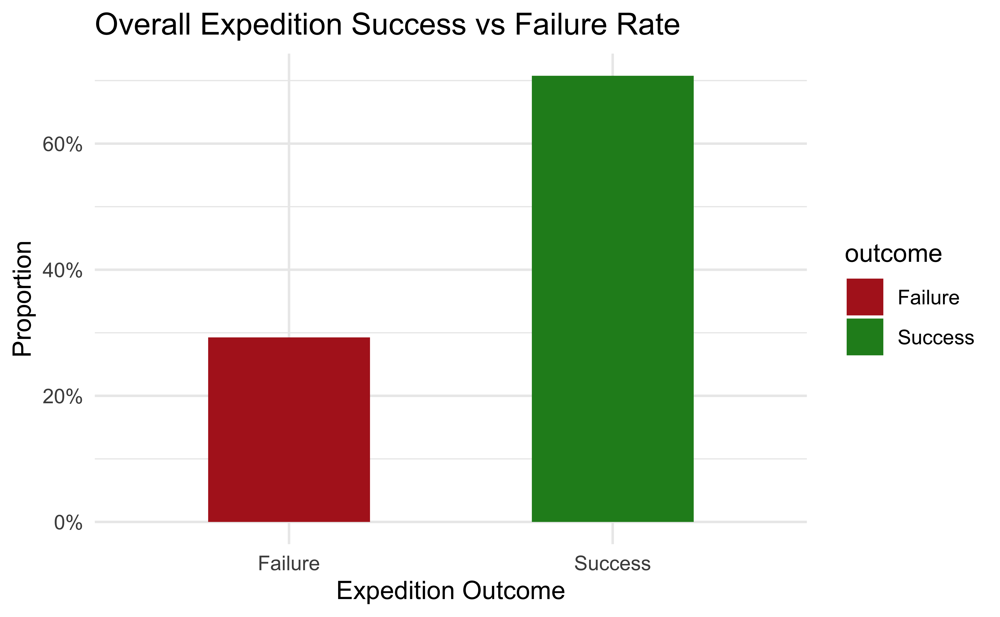
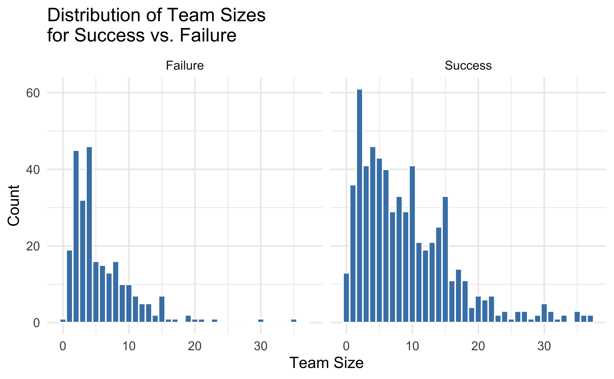
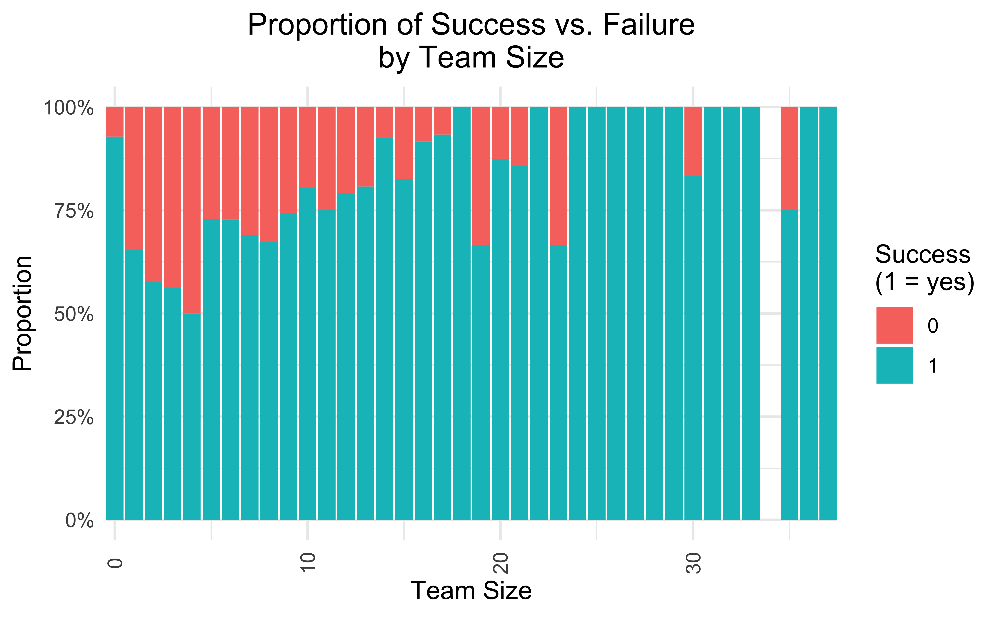
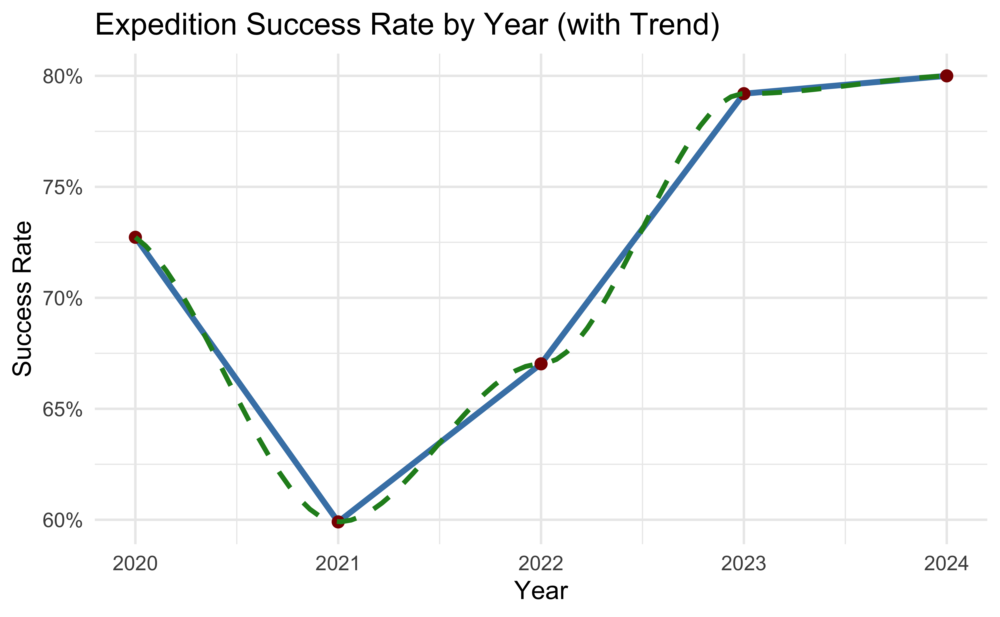
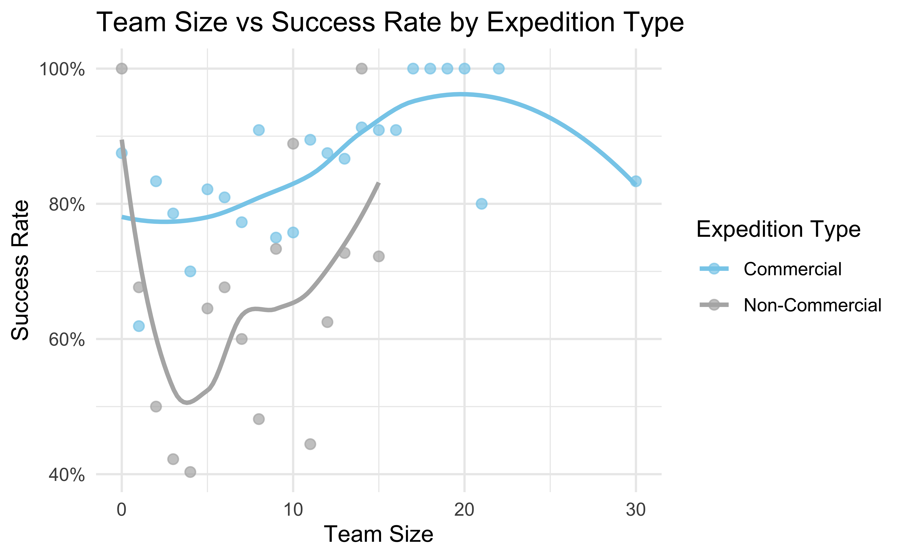

A Statistical Exploration of Himalayan Expeditions
INFO 526 - Summer 2025 - Final Project
Our Dataset
Himalayan Database - Created to continue the legacy of Elizabeth Hawley, a journalist who spent decades documenting Himalayan expeditions.
Dataset - TidyTuesday GitHub repository and has been amended to the years 2020 - 2024 to manage file size.
There are 2 main datasets :
exped_tidy - Contains details of expeditions
peaks_tidy - Includes data about the Himalayan Peaks
Question 1
What factors contribute to the success or failure of a summit?
Analyze expedition outcomes using both expedition and peak variables. “Success” will be defined based on the `TERMREASON_FACTOR`, with specific values representing a successful summit.
Use factors like – geography, team size, year, and commercial vs non-commercial expeditions
Question 1 : Approach
- Get Data from the CSV files
- Build Model & Variable Inferences
Code
table(exped$SUCCESS1, useNA = "ifany")
exped2 <- exped |>
mutate(
success = ifelse(SUCCESS1 %in% c("Y", "Yes", "yes"), 1,
ifelse(SUCCESS1 %in% c("N", "No", "no"), 0, as.numeric(SUCCESS1))),
peak = as.factor(PEAKID),
team_size = as.numeric(TOTMEMBERS),
oxygen = ifelse(O2USED %in% c("Y", "Yes", "yes"), 1,
ifelse(O2USED %in% c("N", "No", "no"), 0, as.numeric(O2USED))),
season = as.factor(SEASON)
) |>
filter(!is.na(success), !is.na(team_size), !is.na(oxygen))
model <- glm(
success ~ peak + team_size + oxygen + season + YEAR,
data = exped2,
family = "binomial"
)- Start plotting various charts building up to the case
Question 1 : Start
The Overall Success vs Failure Rate out of all expeditions.

We will study with following variables:
| Potential Factors to Study Success Rate |
|---|
| Explore Team Size |
| Effect of Geography |
| Explore by Year |
| Explore Commercial Factor |
Question 1 : Explore Team Size


Question 1 : Explore Team Size Analysis
These plots suggests a non-linear relationship between team size and summit success:
Very small teams (1–5 climbers)tend to have very high success rates.Probable cause - agility, lighter logistical needs, and tighter decision-making.
Small-to-medium teams (3–8 climbers)show a noticeable dip in success.Probable cause - enough complexity to introduce friction but not enough manpower to provide robust support.
Medium-large teams (9–20 climbers)exhibit steadily increasing success rates, peaking around 20 members at or near 100%.Probable cause - have enough members to spread tasks, establish well-stocked camps without yet suffering the full burden of very large-group logistics.
Very large teams (20+)see a gradual decline in success.Probable cause - supplies, campsite congestion, decision latency.
Question 1 : Effect of Geography

Question 1 : Effect of Geography Analysis
Geography, in particular the altitude band of a peak—turns out not to be a simple “the higher you go, the harder it gets” story.
Low-altitude peaks (~6800 m, e.g. Ama Dablam)enjoy very high success rates, thanks to gentler slopes, shorter approaches and straightforward rope-fixed “ladder” routesMid-altitude peaks (~7100–7300 m, like Pumori and Baruntse)dips to the bottom of the curve,mountains are often more technical, less commercialized, with fewer fixed ropes and smaller teams—so even though they’re “lower,” they prove tougherHigher Peaks (8000 m + like Everest)enjoys very high success rates, as they benefit from massive infrastructure (high-traffic base camps, helicopter support etc.), which more than offsets the physiological challenge of extreme altitude
Overall, a peak’s infrastructure and traffic are at least as critical to success as its height.
Question 1 : Explore by Year


Question 1 : Explore by Year Analysis
These plots suggests, despite a pandemic-driven slump in 2021, overall expedition success has rebounded strongly by 2024
2020average success rate ~ 72%Probable cause – pre-pandemic normalcy, full staffing, established logistics.
2021-2022average success rate fell to ~ 63%Probable cause – COVID travel restrictions & teams adapted to new health protocols and smaller expedition sizes.
2023-2024average success rate rebound to ~ 80%Probable cause – full operational recovery, improved high-altitude gear, accumulated guiding experience.
Question 1 : Commercial Factor



Question 1 : Commercial Factor Analysis
These plots suggests, A professional, well-resourced support structure not only accelerates recovery from external shocks (like a pandemic) but also delivers uniformly higher success rates—regardless of mountain or team size.
Commercial expeditions rebound faster and to a higher plateauIn 2021, both types dipped (COVID impact), but commercial climbs dropped only to ~67%, whereas non-commercial fell to ~53%. By 2024, commercial success surged to ~95 %, while non-commercial languished around ~64%.
Across individual peaks, company-run trips consistently outshine independent onesOn major peaks (Everest, Lhotse, Ama Dablam), commercial success rates hover in the 85–95 % range. Non-commercial attempts on the same mountains are 5–10 % lower.
Team-size effects differ by expedition typeCommercial: success stays high (75–100 %) across all team sizes, peaking around 20 members.
Non-commercial: a pronounced “U-shape”, very small groups (> 80 %) and very large groups (~75 %) do better, but mid-sized teams (5–10 climbers) dip down near 50 %
Question 2
Does an expedition’s funding (commercial vs non-commercial) affect safety outcomes?
Import data , sort and wrangle
Question 2 : Motivation & Setup
Does Funding Type Affect Expedition Safety?
Purpose
Commercial expeditions are often seen as safer due to better logistics, guides, and resources.
The following analysis aims to address this assumption by comparing commercial, private, and non-commercial groups.
How Sponsors Were Categorized
To determine funding source the data was wrangled and sorted using the “SPONSOR” column. This was accomplished by repeatedly editing the sorted list. The sponsor column were nearly all unique. I found an example here:https://stackoverflow.com/questions/59082243/multiple-patterns-for-string-matching-using-case-when
Question 2 : summary statistics on safety
# Summarize safety metrics by funding type
library(dplyr)
library(knitr)
exped_q2 |>
group_by(FUNDING_SIMPLIFIED) |>
summarise(
n_expeditions = n(),
n_success = sum(ANY_SUCCESS),
n_fatalities = sum(FATALITIES),
pct_success = mean(ANY_SUCCESS),
pct_fatal = mean(FATALITIES),
.groups = "drop"
) |>
mutate(
pct_success = scales::percent(pct_success, accuracy = 0.1),
pct_fatal = scales::percent(pct_fatal, accuracy = 0.1)
) |>
kable(
caption = "Expedition Outcomes by Funding Type (2020–2024)",
col.names = c(
"Funding Type",
"Total Expeditions",
"Number Successful",
"Number with Fatalities",
"Success Rate",
"Fatality Rate"
),
format = "html"
)| Funding Type | Total Expeditions | Number Successful | Number with Fatalities | Success Rate | Fatality Rate |
|---|---|---|---|---|---|
| Commercial | 274 | 212 | 8 | 77.4% | 2.9% |
| Independent/Other | 517 | 365 | 27 | 70.6% | 5.2% |
| Non-commercial | 91 | 51 | 3 | 56.0% | 3.3% |
Question 2 : How do Expeditions End?

The above figure shows that proportionally, accidents are more common with Non-Commercial expeditions. Termination due to bad weather appears uniform across all groups, which is expected.
Question 2 : Fatality trend

Trend in Member Fatalities by Funding Type, 2020–2024
It’s one thing to say commercial expeditions are safer but is that always true? I wanted to check whether fatality rates have changed over time, and if so, whether some groups are improving faster than others. This smoothed line chart shows the share of expeditions with fatalities by year and funding type. This is overlap with question 1.
Question 2 : Team Size vs Fatality
Next question: does team size make a difference? You’d think larger teams might be safer due to support and redundancy, but also possibly riskier if they’re less experienced or move slowly. This scatterplot checks whether total team size correlates with success, failure, or fatalities — and whether that varies by funding type.
Team Size and Expedition Outcome by Funding Type
Question 2 : Team Size by Funding As Proxy for Safety Resources
Large commercial teams often come with more resources: guides, oxygen, fixed ropes, medical support. That could partly explain why they have lower fatality rates.
Meanwhile, small non-commercial teams might:
Take harder routes (fewer sherpa or porters)
Push limits with less redundancy
Face more exposure if things go wrong
So while team size alone doesn’t determine safety, it’s a proxy for resourcing — and resourcing links back to safety.
Distribution of Team Size by Funding Type